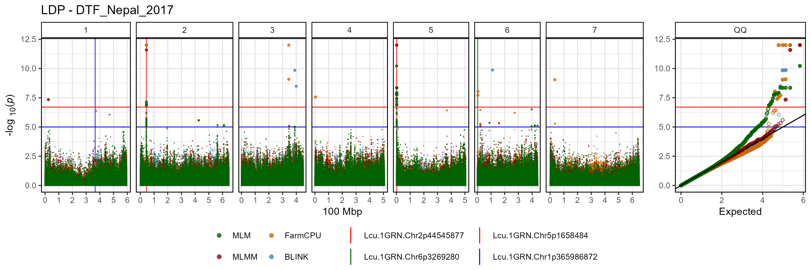
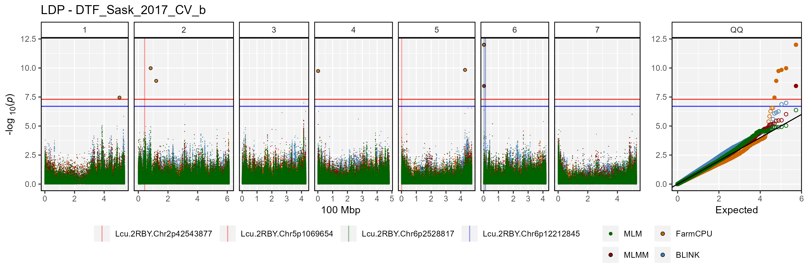

gwaspr: an R package for plotting GWAS results from the GAPIT package
- GAPIT Website: https://www.maizegenetics.net/gapit
- GAPIT github: https://github.com/jiabowang/GAPIT
Usage
For best practice, output from GAPIT should be in its own folder. In this case, they are located in a folder called GWAS_Results/. For this example we will plot GWAS results from 3 traits in a lentil diversity panel:
- ****Cotyledon_Color**: a qualitative trait describing cotyledon color (Red = 0, Yellow = 1).
- DTF_Nepal_2017: a quantitative trait describing days from sowing to flowering in a 2017 Nepal field trial.
- DTF_Sask_2017: a quantitative trait describing days from sowing to flowering in a 2017 Saskatchewan field trial.
- DTF_Sask_2017_b: same as above but run with the b coefficient from a photothermal model (see Wright et al. 2020) used as a covariate.
Note: for more info check out this GWAS tutorial.
gwaspr Functions
list_Traits()
list_Traits(folder = "GWAS_Results/")list_Results_Files()
list_Result_Files(folder = "GWAS_Results/")## [1] "GAPIT.Association.GWAS_Results.BLINK.Cotyledon_Color(Kansas).csv"
## [2] "GAPIT.Association.GWAS_Results.BLINK.Cotyledon_Color(NYC).csv"
## [3] "GAPIT.Association.GWAS_Results.BLINK.DTF_Nepal_2017(Kansas).csv"
## [4] "GAPIT.Association.GWAS_Results.BLINK.DTF_Nepal_2017(NYC).csv"
## [5] "GAPIT.Association.GWAS_Results.BLINK.DTF_Sask_2017(Kansas).csv"
## [6] "GAPIT.Association.GWAS_Results.BLINK.DTF_Sask_2017(NYC).csv"
## [7] "GAPIT.Association.GWAS_Results.BLINK.DTF_Sask_2017_b(Kansas).csv"
## [8] "GAPIT.Association.GWAS_Results.BLINK.DTF_Sask_2017_b(NYC).csv"
## [9] "GAPIT.Association.GWAS_Results.FarmCPU.Cotyledon_Color(Kansas).csv"
## [10] "GAPIT.Association.GWAS_Results.FarmCPU.Cotyledon_Color(NYC).csv"
## [11] "GAPIT.Association.GWAS_Results.FarmCPU.DTF_Nepal_2017(Kansas).csv"
## [12] "GAPIT.Association.GWAS_Results.FarmCPU.DTF_Nepal_2017(NYC).csv"
## [13] "GAPIT.Association.GWAS_Results.FarmCPU.DTF_Sask_2017(Kansas).csv"
## [14] "GAPIT.Association.GWAS_Results.FarmCPU.DTF_Sask_2017(NYC).csv"
## [15] "GAPIT.Association.GWAS_Results.FarmCPU.DTF_Sask_2017_b(Kansas).csv"
## [16] "GAPIT.Association.GWAS_Results.FarmCPU.DTF_Sask_2017_b(NYC).csv"
## [17] "GAPIT.Association.GWAS_Results.MLM.Cotyledon_Color(NYC).csv"
## [18] "GAPIT.Association.GWAS_Results.MLM.DTF_Nepal_2017(NYC).csv"
## [19] "GAPIT.Association.GWAS_Results.MLM.DTF_Sask_2017(NYC).csv"
## [20] "GAPIT.Association.GWAS_Results.MLM.DTF_Sask_2017_b(NYC).csv"
## [21] "GAPIT.Association.GWAS_Results.MLMM.Cotyledon_Color(NYC).csv"
## [22] "GAPIT.Association.GWAS_Results.MLMM.DTF_Nepal_2017(NYC).csv"
## [23] "GAPIT.Association.GWAS_Results.MLMM.DTF_Sask_2017(NYC).csv"
## [24] "GAPIT.Association.GWAS_Results.MLMM.DTF_Sask_2017_b(NYC).csv"is_ran()
is_ran(folder = "GWAS_Results/")Order_GWAS_Results()
# first reorder the result files if they are not already arranged by P.value
order_GWAS_Results(folder = "GWAS_Results/")is_ordered()
is_ordered(folder = "GWAS_Results/")table_GWAS_Results()
myResults <- table_GWAS_Results(folder = "GWAS_Results/",
threshold = 6.8, sug.threshold = 5)
myResults[1:10,]## SNP Chr Pos P.value MAF effect
## 1 Lcu.1GRN.Chr1p365986872 1 365986872 1.754402e-175 0.47096774 0.4683785
## 2 Lcu.1GRN.Chr1p365986872 1 365986872 1.164052e-154 0.47096774 NA
## 3 Lcu.1GRN.Chr1p365986872 1 365986872 3.281941e-128 0.47096774 0.4954384
## 4 Lcu.1GRN.Chr1p361840399 1 361840399 2.178943e-84 0.04193548 0.4603589
## 5 Lcu.1GRN.Chr1p361840399 1 361840399 6.963600e-47 0.04193548 0.4715544
## 6 Lcu.1GRN.Chr1p361856257 1 361856257 3.377658e-40 0.04516129 NA
## 7 Lcu.1GRN.Chr5p1658484 5 1658484 1.050791e-34 0.12345679 12.5619150
## 8 Lcu.1GRN.Chr2p44546658 2 44546658 9.063107e-34 0.06790123 NA
## 9 Lcu.1GRN.Chr6p3269280 6 3269280 1.213338e-33 0.28105590 -2.2553180
## 10 Lcu.1GRN.Chr1p437374598 1 437374598 2.783736e-31 0.47670807 NA
## H.B.P.Value Model Type Trait negLog10_P negLog10_HBP
## 1 5.901229e-170 BLINK Kansas Cotyledon_Color 174.75587 169.22906
## 2 3.915488e-149 MLMM NYC Cotyledon_Color 153.93403 148.40721
## 3 1.103937e-122 FarmCPU Kansas Cotyledon_Color 127.48387 121.95706
## 4 3.664623e-79 BLINK Kansas Cotyledon_Color 83.66175 78.43597
## 5 1.171163e-41 FarmCPU Kansas Cotyledon_Color 46.15717 40.93138
## 6 5.680663e-35 MLMM NYC Cotyledon_Color 39.47138 34.24560
## 7 3.534516e-29 BLINK Kansas DTF_Nepal_2017 33.97848 28.45167
## 8 3.048530e-28 FarmCPU NYC DTF_Nepal_2017 33.04272 27.51591
## 9 4.081267e-28 FarmCPU Kansas DTF_Sask_2017_b 32.91602 27.38920
## 10 4.681785e-26 FarmCPU NYC DTF_Sask_2017_b 30.55537 25.32959
## Threshold Effect
## 1 Significant NA
## 2 Significant 0.4905608
## 3 Significant NA
## 4 Significant NA
## 5 Significant NA
## 6 Significant 1.4947330
## 7 Significant NA
## 8 Significant -1.3159704
## 9 Significant NA
## 10 Significant -0.1943441table_GWAS_Results_Summary()
mySummary <- table_GWAS_Results_Summary(myResults)
mySummary[1:10,]## SNP Chr Pos Hits MAF max_negLog10_P
## 1 Lcu.1GRN.Chr1p365986872 1 365986872 4 0.47096774 174.75587
## 2 Lcu.1GRN.Chr1p361840399 1 361840399 3 0.04193548 83.66175
## 3 Lcu.1GRN.Chr1p361856257 1 361856257 3 0.04516129 39.47138
## 4 Lcu.1GRN.Chr5p1658484 5 1658484 4 0.12345679 33.97848
## 5 Lcu.1GRN.Chr2p44546658 2 44546658 2 0.06790123 33.04272
## 6 Lcu.1GRN.Chr6p3269280 6 3269280 7 0.28105590 32.91602
## 7 Lcu.1GRN.Chr1p437374598 1 437374598 1 0.47670807 30.55537
## 8 Lcu.1GRN.Chr1p361407757 1 361407757 2 0.15000000 29.48684
## 9 Lcu.1GRN.Chr1p446411579 1 446411579 1 0.27950311 28.18039
## 10 Lcu.1GRN.Chr1p361792419 1 361792419 2 0.20967742 26.81321
## min_negLog10_P Models Traits
## 1 29.185065 BLINK;MLMM;FarmCPU;MLM Cotyledon_Color
## 2 9.575086 BLINK;FarmCPU;MLM Cotyledon_Color
## 3 8.001787 MLMM;MLM;BLINK Cotyledon_Color
## 4 10.220535 BLINK;FarmCPU;MLMM;MLM DTF_Nepal_2017
## 5 6.842091 FarmCPU;MLM DTF_Nepal_2017
## 6 5.198822 FarmCPU;BLINK;MLMM;MLM DTF_Sask_2017_b;DTF_Sask_2017
## 7 30.555372 FarmCPU DTF_Sask_2017_b
## 8 12.778390 FarmCPU;MLM Cotyledon_Color
## 9 28.180392 FarmCPU DTF_Sask_2017_b
## 10 8.679270 FarmCPU;MLM Cotyledon_Color
## max_negLog10_HBP min_negLog10_HBP min_P max_P min_HBP
## 1 169.22906 23.6582516 1.754402e-175 6.530328e-30 5.901229e-170
## 2 78.43597 6.5703892 2.178943e-84 2.660200e-10 3.664623e-79
## 3 34.24560 3.6510649 3.377658e-40 9.958937e-09 5.680663e-35
## 4 28.45167 4.6937218 1.050791e-34 6.018175e-11 3.534516e-29
## 5 27.51591 2.5457262 9.063107e-34 1.438498e-07 3.048530e-28
## 6 27.38920 0.6316665 1.213338e-33 6.326705e-06 4.081267e-28
## 7 25.32959 25.3295885 2.783736e-31 2.783736e-31 4.681785e-26
## 8 24.43715 9.5705792 3.259584e-30 1.665749e-13 3.654722e-25
## 9 23.13070 23.1307001 6.600970e-29 6.600970e-29 7.401162e-24
## 10 21.88845 5.7229993 1.537424e-27 2.092812e-09 1.292847e-22
## max_HBP
## 1 2.196587e-24
## 2 2.689124e-07
## 3 2.233239e-04
## 4 2.024315e-05
## 5 2.846255e-03
## 6 2.335250e-01
## 7 4.681785e-26
## 8 2.687948e-10
## 9 7.401162e-24
## 10 1.892347e-06list_Top_Markers()
list_Top_Markers(folder = "GWAS_Results/", trait = "DTF_Nepal_2017")## # A tibble: 34 × 6
## SNP Chr Pos Traits Models Max_LogP
## <chr> <int> <int> <chr> <chr> <dbl>
## 1 Lcu.1GRN.Chr5p1658484 5 1658484 DTF_Nepal_2017 BLINK; FarmC… 34.0
## 2 Lcu.1GRN.Chr2p44546658 2 44546658 DTF_Nepal_2017 FarmCPU; MLM 33.0
## 3 Lcu.1GRN.Chr2p44545877 2 44545877 DTF_Nepal_2017 BLINK; FarmC… 22.0
## 4 Lcu.1GRN.Chr5p1650591 5 1650591 DTF_Nepal_2017 FarmCPU; MLM 18.7
## 5 Lcu.1GRN.Chr3p345157947 3 345157947 DTF_Nepal_2017 FarmCPU 15.9
## 6 Lcu.1GRN.Chr5p2101990 5 2101990 DTF_Nepal_2017 FarmCPU 14.8
## 7 Lcu.1GRN.Chr6p111399799 6 111399799 DTF_Nepal_2017 BLINK 9.87
## 8 Lcu.1GRN.Chr3p389104888 3 389104888 DTF_Nepal_2017 BLINK 9.85
## 9 Lcu.1GRN.Chr3p345193745 3 345193745 DTF_Nepal_2017 BLINK; FarmC… 9.08
## 10 Lcu.1GRN.Chr7p33922006 7 33922006 DTF_Nepal_2017 FarmCPU 9.04
## # ℹ 24 more rows
list_Top_Markers(folder = "GWAS_Results/", trait = "DTF_Sask_2017")## # A tibble: 32 × 6
## SNP Chr Pos Traits Models Max_LogP
## <chr> <int> <int> <chr> <chr> <dbl>
## 1 Lcu.1GRN.Chr2p44558948 2 44558948 DTF_Sask_2017 BLINK 15.2
## 2 Lcu.1GRN.Chr2p45088100 2 45088100 DTF_Sask_2017 BLINK; FarmCPU 14.5
## 3 Lcu.1GRN.Chr2p45092147 2 45092147 DTF_Sask_2017 FarmCPU 13.3
## 4 Lcu.1GRN.Chr6p236151499 6 236151499 DTF_Sask_2017 BLINK 12.1
## 5 Lcu.1GRN.Chr4p5017613 4 5017613 DTF_Sask_2017 BLINK 11.5
## 6 Lcu.1GRN.Chr3p448489765 3 448489765 DTF_Sask_2017 BLINK 10.5
## 7 Lcu.1GRN.Chr6p20799044 6 20799044 DTF_Sask_2017 BLINK; FarmCPU 9.58
## 8 Lcu.1GRN.Chr6p40079300 6 40079300 DTF_Sask_2017 BLINK 8.70
## 9 Lcu.1GRN.Chr3p444676637 3 444676637 DTF_Sask_2017 FarmCPU 8.55
## 10 Lcu.1GRN.Chr4p14484871 4 14484871 DTF_Sask_2017 BLINK; FarmCPU 7.98
## # ℹ 22 more rows
list_Top_Markers(folder = "GWAS_Results/", trait = "DTF_Sask_2017_b")## # A tibble: 39 × 6
## SNP Chr Pos Traits Models Max_LogP
## <chr> <int> <int> <chr> <chr> <dbl>
## 1 Lcu.1GRN.Chr6p3269280 6 3269280 DTF_Sask_2017_b BLINK; Farm… 32.9
## 2 Lcu.1GRN.Chr1p437374598 1 437374598 DTF_Sask_2017_b FarmCPU 30.6
## 3 Lcu.1GRN.Chr1p446411579 1 446411579 DTF_Sask_2017_b FarmCPU 28.2
## 4 Lcu.1GRN.Chr6p3270522 6 3270522 DTF_Sask_2017_b FarmCPU 21.8
## 5 Lcu.1GRN.Chr3p448586972 3 448586972 DTF_Sask_2017_b FarmCPU 20.4
## 6 Lcu.1GRN.Chr3p437386398 3 437386398 DTF_Sask_2017_b FarmCPU 18.6
## 7 Lcu.1GRN.Chr6p431657465 6 431657465 DTF_Sask_2017_b FarmCPU 17.8
## 8 Lcu.1GRN.Chr1p437359352 1 437359352 DTF_Sask_2017_b BLINK; Farm… 17.5
## 9 Lcu.1GRN.Chr3p239208186 3 239208186 DTF_Sask_2017_b BLINK 14.0
## 10 Lcu.1GRN.Chr3p437318468 3 437318468 DTF_Sask_2017_b FarmCPU 13.3
## # ℹ 29 more rows
list_Top_Markers(folder = "GWAS_Results/", trait = "Cotyledon_Color")## # A tibble: 39 × 6
## SNP Chr Pos Traits Models Max_LogP
## <chr> <int> <int> <chr> <chr> <dbl>
## 1 Lcu.1GRN.Chr1p365986872 1 365986872 Cotyledon_Color BLINK; Farm… 175.
## 2 Lcu.1GRN.Chr1p361840399 1 361840399 Cotyledon_Color BLINK; Farm… 83.7
## 3 Lcu.1GRN.Chr1p361856257 1 361856257 Cotyledon_Color MLMM 39.5
## 4 Lcu.1GRN.Chr1p361407757 1 361407757 Cotyledon_Color FarmCPU 29.5
## 5 Lcu.1GRN.Chr1p365318023 1 365318023 Cotyledon_Color MLM 26.3
## 6 Lcu.1GRN.Chr1p365318027 1 365318027 Cotyledon_Color MLM 26.1
## 7 Lcu.1GRN.Chr1p27007485 1 27007485 Cotyledon_Color MLMM 23.1
## 8 Lcu.1GRN.Chr1p166851286 1 166851286 Cotyledon_Color FarmCPU 15.0
## 9 Lcu.1GRN.Chr1p361541626 1 361541626 Cotyledon_Color BLINK 14.6
## 10 Lcu.1GRN.Chr7p645659887 7 645659887 Cotyledon_Color BLINK 13.5
## # ℹ 29 more rowsgg_Manhattan()
Multi-Model Manhattan Plots
This is the default setting for this function: facet = F
for(i in list_Traits(folder = "GWAS_Results/")) {
# Plot
mp <- gg_Manhattan(folder = "GWAS_Results/", trait = i)
# Save
ggsave(paste0("man/figures/gg_Man1_", i, ".png"),
mp, width = 12, height = 3.5, bg = "white")
}


Facetted Manhattan Plots
facet the plots by setting facet = T
for(i in list_Traits(folder = "GWAS_Results/")) {
# Plot
mp <- gg_Manhattan(folder = "GWAS_Results/", trait = i, facet = T)
# Save
ggsave(paste0("man/figures/gg_Man2_", i, ".png"),
mp, width = 12, height = 8, bg = "white")
}


gg_Mahattan_Zoom()
# Plot
mp <- gg_Manhattan_Zoom(
# Specify a folder with GWAS results
folder = "GWAS_Results/",
# Select a trait to plot
trait = "Cotyledon_Color",
# Plot just Chromosome 1
chr = 1,
pos1 = 360000000,
pos2 = 370000000,
# Highlight specific markers
markers = c("Lcu.1GRN.Chr1p365986872",
"Lcu.1GRN.Chr1p361840399"),
# Create alt labels for the markers
labels = c("365Mbp","361Mbp"),
# Specify Color for each marker vline
vline.colors = rep("green",3),
# Should models be facetted
facet = T
)
# Save
ggsave("man/figures/gg_Man_Zoom1.png", mp, width = 8, height = 8)
# Plot
mp <- gg_Manhattan_Zoom(
# Specify a folder with GWAS results
folder = "GWAS_Results/",
# Select a trait to plot
trait = "Cotyledon_Color",
# Plot just Chromosome 1
chr = 1,
pos1 = 360000000,
pos2 = 370000000,
# Plot only certain GWAS models
models = c("MLMM","FarmCPU","BLINK"),
# Highlight specific markers
markers = c("Lcu.1GRN.Chr1p365986872",
"Lcu.1GRN.Chr1p361840399"),
# Create alt labels for the markers
labels = c("365Mbp","361Mbp"),
# Specify Color for each marker vline
vline.colors = rep("green",3),
# Should models be facetted
facet = F,
# set a max P value
pmax = 50
)
# Save
ggsave("man/figures/gg_Man_Zoom2.png", mp, width = 8, height = 4)
gg_Manhattan_Traits()
# Plot
mp <- gg_Manhattan_Traits(
# Specify a folder with GWAS results
folder = "GWAS_Results/",
# Select traits to plot
traits = c("DTF_Sask_2017", "DTF_Nepal_2017"),
# Specify a title
title = "Days to Flower",
# Highlight specific markers
markers = c("Lcu.1GRN.Chr2p44545877",
"Lcu.1GRN.Chr5p1658484",
"Lcu.1GRN.Chr6p3269280"),
# Create alt labels for the markers
labels = c("44Mbp","16Mbp","32Mbp"),
# Specify Color for each marker vline
vline.colors = c("red","red","blue")
)
# Save
ggsave("man/figures/gg_Man_Traits.png", mp, width = 12, height = 8, bg = "white")
gg_GWAS_Summary()
# Plot
mp <- gg_GWAS_Summary(folder = "GWAS_Results/",
title = "Summary of Significant GWAS Results")
# Save
ggsave("man/figures/GWAS_Summary_01.png", mp, width = 12, height = 4)
Make it an interactive plot with the following code
gg_plotly(mp, filename = "man/figures/GWAS_Summary.html")gg_Marker_Box()
gg_Marker_Box(xG = myG, xY = myY,
traits = "DTF_Nepal_2017",
markers = c("Lcu.1GRN.Chr2p44545877", "Lcu.1GRN.Chr5p1658484"),
plot.violin = T,
plot.points = T,
box.width = 0.1,
point.size = 1,
myncol = NULL
)gg_Marker_Box()
#
gg_Marker_Bar(xG = myG, xY = myY,
traits = "CotyledonColor",
markers = "Lcu.1GRN.Chr1p365986872",
plot.histogram = T,
plot.density = F,
plot.counts = T,
myncol = NULL,
line.color = F
)